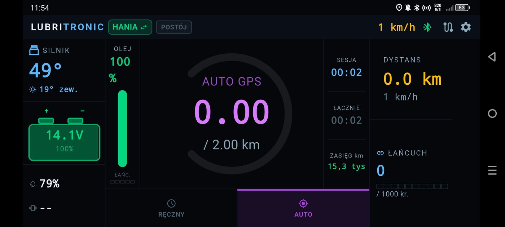
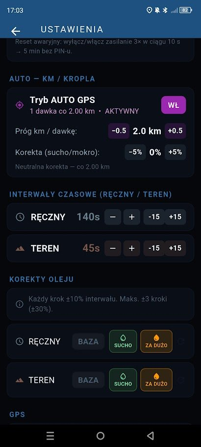
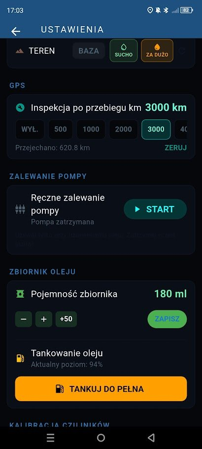
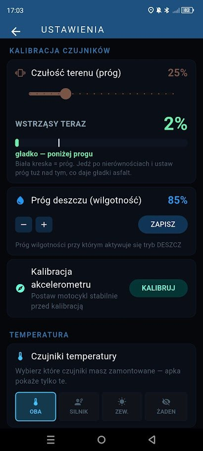
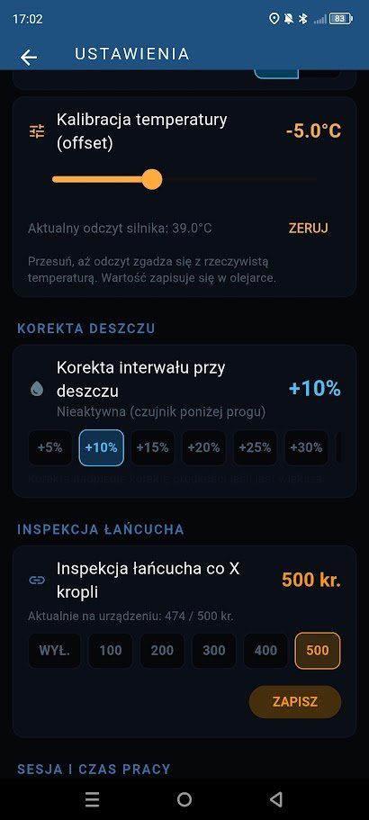
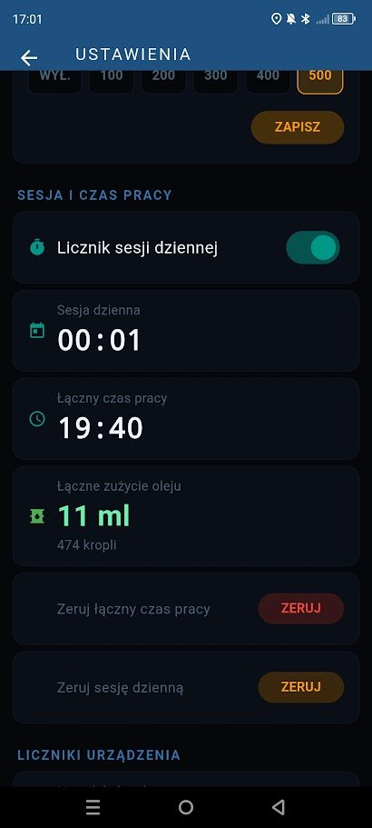
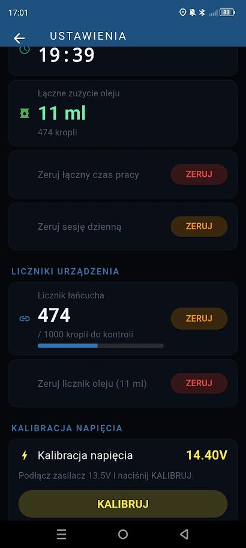
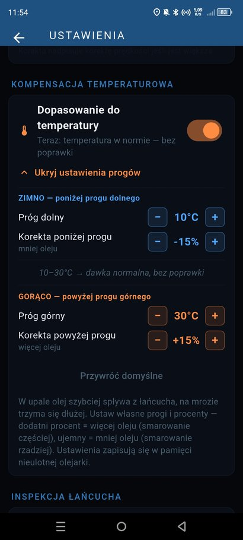
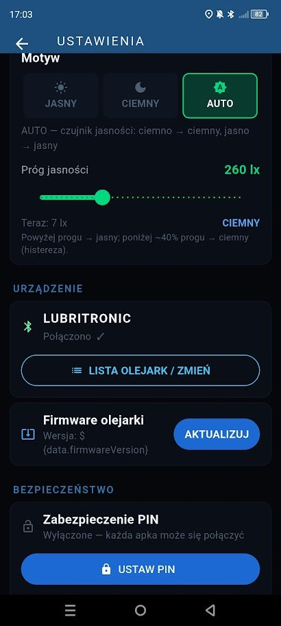

Aplikacja to pulpit Twojej olejarki: pokazuje, co dzieje się z motocyklem, pozwala zmienić sposób smarowania jednym dotknięciem, a jeśli zajdzie taka potrzeba, pozwala bezpiecznie wgrać nową wersję oprogramowania wprost z telefonu.
Po połączeniu widzisz stan olejarki i motocykla w jednym miejscu — bez przewijania i szukania. Duże, czytelne cyfry są widoczne nawet w rękawicach i w słońcu.

Aplikacja daje pełną kontrolę nad dawkowaniem — od podstawowego trybu pracy po precyzyjne dostrojenie czujników pod konkretny motocykl.

Decydujesz, jak często olejarka podaje olej. W trybie automatycznym co zadany dystans, w ręcznym co określony czas.

Aplikacja pilnuje poziomu oleju i przypomina o obsłudze łańcucha, żebyś nie musiał tego pamiętać.

Każda maszyna inaczej przenosi drgania. Możesz ustawić, co olejarka ma uznać za trudny teren, obserwując wskazania na żywo podczas jazdy.

Drobne poprawki, które sprawiają, że olejarka pracuje dokładnie tak, jak chcesz.

Widzisz czarno na białym, ile olejarka przepracowała i ile oleju faktycznie zużyła.

Podgląd postępu do kolejnej kontroli łańcucha oraz możliwość dostrojenia pomiaru napięcia instalacji.

W upale olej szybciej spływa z łańcucha, na mrozie trzyma się dłużej — ustawiasz własne progi i procenty korekty, olejarka reaguje sama.

Obsługa kilku motocykli, ewentualne aktualizacje bez odsyłania urządzenia i zabezpieczenie przed obcym telefonem.
Duże cyfry i wyraźne kolory — rzut oka wystarczy, żeby wiedzieć, co się dzieje. Nie musisz zatrzymywać się ani zdejmować rękawic.
Po skonfigurowaniu olejarka pracuje samodzielnie. Telefon potrzebny jest tylko wtedy, gdy chcesz coś zmienić lub podejrzeć.
Olejarka działa na oprogramowaniu przetestowanym już w realnym użytkowaniu. Jeśli zajdzie konieczność albo pojawi się potrzeba dopracowania pewnych opcji, opracuję nową wersję — wgrasz ją bezpośrednio i bezpiecznie z aplikacji, bez odsyłania urządzenia.
Kod PIN sprawia, że obcy telefon nie posteruje Twoją olejarką. Zaufane telefony łączą się automatycznie, bez wpisywania kodu za każdym razem.
Aplikacja na Androida. Zainstaluj ją przed montażem — przyda się już przy zalewaniu układu i pierwszej konfiguracji.